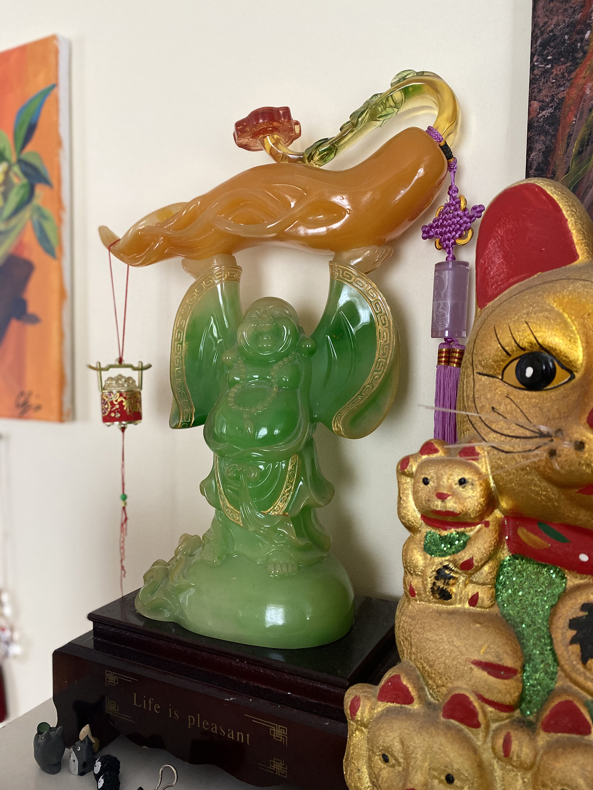
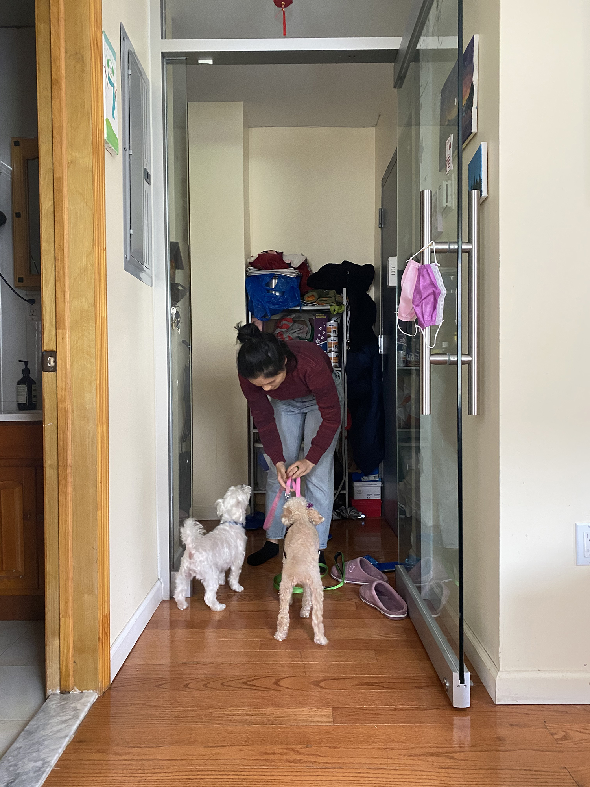

Interview with
Chen Ying & Evan Durkin
Ying, you moved around a lot as you were growing up. Do you still have memories of your time in China and what the transition was like when you moved to New York and then on to Florida?
I have fond memories of being with my older sister and my Grandmother when she would watch over us. I also remember being outdoors a lot and pretending to cook meals with my cousin using rocks. The transition period feels like a gray area in my memory, but I remember my initial impression of the city was thought it was a hectic place. Especially the Lower East Side, which is where I first moved to with my mom and Rachel.
So after you moved to New York, you ended up moving down south and spending some time in Georgia and Florida. At this time you were in elementary and middle school. How did you like living there?
I hated it at the time. People were not friendly at first and it took me a long time for me to adjust. By that time I was definitely more acclimated to a city-lifestyle and so moving to the suburbs felt like a big culture shock. This was also my first time not living in an Asian neighborhood, so that felt very new to me. I started to pick up on cultural differences, which was enlightening, but also isolating at the time.
Now, you’re involved with a lot of creative activities and keep up with new media. When did these interests first start?

Initially it started because my older sister, Rachel, was interested in photography. She would have me model for her or help her set up different scenes for her to take pictures of. Eventually, my ideas for her small photoshoots grew and I start to take over most of the production and take photos on my own. For awhile I also had a strong interest in making films, but at the time I didn’t have any of the tools to even play or experiment with making movies. For the photography, my sister and I shared a camera that my uncle gave us as a gift.
What what is about photography that struck your interests?
It really wasn’t the actually process of photographing, but the editing process that drew my attention. By this time I had started to work with Photoshop and I was really intrigued with everything that you can do in the program. I do like editing my photos a lot and that’s probably the funnest part for me. I like to make the settings feel imaginary, like no other place.
So then how does your interest in the arts mix with your goal of becoming a dental hygienist?
Well, I realized that my hobbies were quite expensive, and I needed a way to fund my photoshoots. I have family members that also work in the dentistry field and I spent some time talking with them about the field and I knew that going into dental work is something that I could do well in. Dental work requires a lot of attention to details, similar to editing photo. A lot of patience and fine tuning!
Ah, I see! Yes, that’s a good way to think of it. What seems like a total mix of crafts, but there is a commonality with the kind of attention they require.
Yes, for sure. I never would have thought that I would go into dentistry, but I’ve been enjoying it so far.
Now that you’ve been spending a lot of time working on photography and you’ve had a few years working as a dental hygienist, what are some of your next goals?
Eventually, I would love to be able to do commissions for my photography and video work. I think it would be great to be able to work for a few years in China and interview and photograph different artists that I follow. I’ve recently started my own YouTube channel as a fun hobby where I provide commentary on episodes of Chinese dramas. This is a popular activity that people have been doing for a while and it’s just a fun way of interacting with other people who watch the same shows and see their expressions and hear their feedback.
What made you want to start this channel?
Well I think being home and alone this past year definitely influenced that idea! I mean, I have my two sisters and my mom, but they don’t watch shows as often as I do. I started to find other people on YouTube who made similar videos and this felt like a way of interacting with them. It’s fun to see other people’s comments on my videos and have them discuss the shows. It’s a way of being able to talk about things with other people that I haven’t met before.
Aside from working on this new YouTube channel, how has your Covid quarantine year been for you and your family?
It’s been really testy at times. Being in an apartment all the time with my sisters is not easy. It was especially hard when my sister and I weren’t working for three months straight. I think we went a little crazy walking back-and-forth around the apartment. We would have to take care of the plants in my mom’s plant shop that’s below the apartment, but that was one of our few activities that we had available.
Do you feel you’ve been able to work towards any of your goals over the past year?
I definitely was able to spend a lot of time going through all of my different hobbies, but I think last year was largely about family. Even though it was difficult being at home, me and my sisters really worked hard to help my mom keep the apartment and her shop together. It’s been interesting to sort of switch roles during this time and take care of everyone and help keep us all busy. I’m definitely the busy-bee and I feel like I need to have some activity happening throughout my day, which was helpful because my sisters are the exact opposite. I have more respect for the things my mom does for us after stepping in her shoes for a little while and seeing what it’s like to deal with everyone!